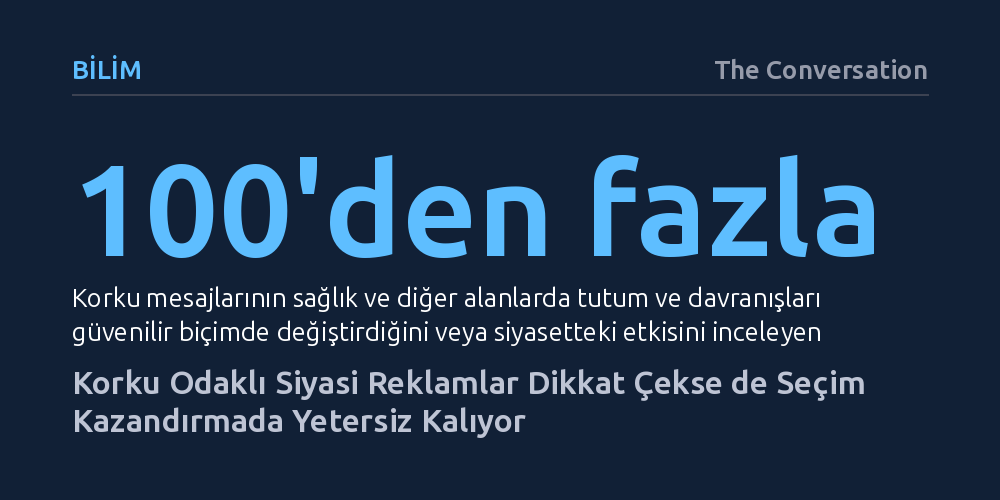

BILIM · The Conversation · 2026-10-24
Siyasi kampanyalarda korku dili seçmenin dikkatini artırsa da tek başına oy kazandırdığına dair güvenilir bir kanıt bulunmuyor. Korkunun eyleme dönüşmesi için seçmene uygulanabilir bir çözüm hissi verilmesi veya var olan kalıpyargıların tetiklenmesi gerekiyor.
Siyasetteki korku ve tehdit dilinin seçmeni sanıldığı gibi kolayca yönlendirmediğini, çözümsüz bırakılan korkunun seçmende eylemsizlik ve mesajı reddetme tepkisi doğurduğunu gösterir.

1964 yılının eylül ayında Amerikan televizyonlarında yayımlanan kısa bir reklam, siyasal iletişim tarihinin en çarpıcı dönüm noktalarından biri oldu. Ekranda bir papatyanın yapraklarını sayan küçük bir kız çocuğu görünüyor, ardından geri sayım yapan bir erkek sesiyle birlikte devasa bir nükleer patlama beliriyordu. Lyndon B. Johnson’ın yeniden seçilme kampanyası için hazırlanan ve rakibi Barry Goldwater’ın adını bile anmayan bu ünlü "Daisy" reklamı, televizyonda ücretli olarak yalnızca bir kez yayımlandı. Ancak kopardığı büyük fırtına sayesinde ana haber bültenlerinde defalarca gösterilerek seçmenin zihnindeki nükleer savaş endişesini doğrudan tetikledi.
Siyasetçilerin ve kampanya yöneticilerinin korkuya bu kadar sık sarılmasının temelinde insan psikolojisinin tehdit algılama mekanizması yatar. Yazarın da belirttiği gibi, "Korku bir alarmdır." Bir tehlikenin yaklaştığını haber vererek insanı günlük alışkanlıklarından ve zihinsel otopilotundan çıkarır. Tehdit altındaki birey daha dikkatli hale gelir, çevresini daha dikkatli gözlemler ve yeni bilgiler aramaya başlar. Özellikle seçim yarışında geride kalan adaylar için bu durum, seçmenin dikkatini mevcut dengeden koparıp kendi mesajına çekmek adına bulunmaz bir fırsattır.
Üstelik bu duygusal uyarılma yalnızca siyasete ilgisiz ya da kararsız kitleleri etkilemekle kalmaz; araştırmalar, siyasetle yakından ilgilenen ve bilgili seçmenlerin duygusal ipuçlarına karşı daha da duyarlı olduğunu gösteriyor. Bilgi düzeyi yüksek vatandaşlar, korku unsuru devreye girdiğinde meseleleri daha derinlemesine analiz etme ve alternatif adayları yeniden tartma motivasyonu kazanır.
Korku mesajlarının kamu sağlığı gibi alanlarda tutumları ve davranışları güvenilir bir biçimde değiştirdiği, yüzü aşkın çalışmayı kapsayan meta-analizlerle kanıtlanmış durumda. Örneğin tütün ve nikotin ürünlerinin zararlarını anlatan korkutucu kampanyalar, bireyler kendilerini bu tehdidi savuşturabilecek güçte hissettiklerinde oldukça başarılı sonuçlar veriyor. Ancak aynı mekanizma siyasi seçimlere uyarlandığında tablonun hiç de beklendiği gibi işlemediği görülüyor. Yüzden fazla araştırmanın incelendiği kapsamlı bir derleme, negatif kampanyaların ve korku dilinin seçim kazandırdığına dair tutarlı hiçbir kanıt bulunmadığını, aksine bu tür reklamların reklamı veren adaya yönelik sempatiyi zedeleyebildiğini ortaya koyuyor.
Bu çelişkinin anahtarı, iletişim kuramcısı Kim Witte’nin geliştirdiği modelde ve yetkinlik hissinde gizlidir. Korku, ancak birey karşı karşıya olduğu tehdide karşı uygulayabileceği somut ve işe yarar bir çözüm olduğuna inandığında yapıcı bir eyleme dönüşür. Eğer tehdit çok büyük ve baş edilemez gösterilirken seçmene gerçekçi bir çıkış yolu sunulmazsa, insanlar mesajın içeriğinden ziyade kendilerini o rahatsız edici duygudan korumaya odaklanır. Tehdidi inkâr eder, görmezden gelir ya da doğrudan mesajı getiren kaynağı suçlayarak kendilerini kapatırlar.
Laboratuvar deneyleri de bu durumu doğrulamaktadır. Yüksek düzeyde kaygı duyan ancak bir şeyleri değiştirebileceğine inanmayan seçmenler, internette hararetle bilgi aramalarına rağmen okuduklarının neredeyse hiçbirini hafızalarında tutamazlar. Kaygı onları bilgi aramaya sevk ederken, öğrenme ve kavrama yetilerini felce uğratır. Seçmen katılımı açısından bakıldığında da sandığa gitme motivasyonunu kaygıdan ziyade öfke duygusu besler; kaygı ise yalnızca hâlihazırda bağış yapacak veya mitinge gidecek kaynaklara sahip olan sınırlı bir kesimi harekete geçirebilir.
Korku taktiklerinin siyaset sahnesinde en kesin ve sinsi biçimde çalıştığı zemin, seçmenin bilinçaltında zaten yer etmiş olan kalıpyargılarla birleştiği anlardır. 1988 ABD başkanlık seçimlerinde George H.W. Bush kampanyasının kullandığı ünlü "Willie Horton" ve "Döner Kapı" reklamları bu stratejinin ders kitaplarına giren örnekleridir. Cezaevi izin sistemini eleştiren bu reklamlar, suç korkusunu doğrudan ırkçı bir ifade kullanmadan siyahi bir mahkûmun görseliyle eşleştirmiş ve toplumdaki örtük önyargıları ustalıkla tetiklemiştir.
Siyaset bilimci Tali Mendelberg’in araştırmaları, bu tür örtük çağrıların gücünü seçmenlerin eşitlik normlarını sessizce bypass edebilmesinden aldığını gösterir. Seçmen kendi ırkçı veya önyargılı duygularıyla yüzleşmek zorunda kalmadan güvenlik kaygısıyla hareket ettiğini düşünür. Ancak bu örtük mesajlar kamuoyu önünde açıkça ırksal veya ayrımcı bir nitelik taşıdığı söylenerek ifşa edildiğinde sihrini kaybeder. Zira çoğu seçmen kendisini açıkça önyargıyı destekleyen biri olarak görmek istemediği için mesaja mesafe koymaya başlar.
Aynı mekanizma cinsiyet ve din kalıpyargılarında da benzer şekilde işler. Yapılan deneylerde, terör tehdidi öne çıkarıldığında seçmenlerin bilinçaltındaki "sert ve maskülen lider" stereotipinin canlandığı görülmüştür. Bu durum kadın bir adayı derhal dezavantajlı konuma iterken, geleneksel olarak güvenlik konularında zaten "şahin" görülen muhafazakâr adayları (cinsiyetlerinden bağımsız olarak) olumsuz etkilemez. Tehdit mesajı doğrudan bir adayın kimliğini hedef almasa bile, seçmenin zihnindeki mevcut önyargı kalıplarını tetikleyerek yarışın dengesini değiştirebilir.
Siyasette rakipleri canavarlaştırma ve korku yayma çabaları modern televizyon çağıyla başlamış değildir. 1828 yılındaki başkanlık yarışında Andrew Jackson'ın rakipleri tarafından cinayet ve hatta yamyamlıkla suçlanması, siyasetin doğasındaki sertliğin köklü geçmişini özetler. Ancak son yarım asırda belirgin biçimde artan şey spesifik olarak korku kullanımından ziyade genel anlamda negatif kampanyaların yoğunluğudur. Karalama reklamları adayların kişiliklerinden çok somut politika başlıklarına odaklansa da siyasetin genel tonunu belirgin şekilde sertleştirmiştir.
Geleneksel akşam haberlerinin yerini hedefli sosyal medya akışlarının aldığı günümüz dijital ekosisteminde ise bu dinamik bambaşka bir boyut kazandı. Dijital platformların algoritmaları tamamen kullanıcı etkileşimiyle beslendiği için korku ve öfke gibi yüksek uyarılma yaratan duyguları ödüllendirir. Kampanyalar da viral görünürlük elde etmek ve bağış toplamak amacıyla dijital cephede duygusal dozu sürekli tırmandırmak zorunda kalır.
Bütün bu bilimsel bulgular, korkunun seçmen tercihini değiştiren basit bir açma-kapama düğmesi olmadığını kanıtlıyor. Korku aslında güçlü bir projektördür; hedeflenen noktayı aydınlatır, dikkati toplar ve zihni değişime açık hale getirir. Ancak bu uyanışın bir adaya oya mı, sandığa küsüp gitmemeye mi yoksa korkuyu yayan kaynağa yönelik derin bir öfkeye mi evrileceği, korkutulan kitleye nasıl bir çıkış yolu ve umut vaat edildiğiyle belirlenir.